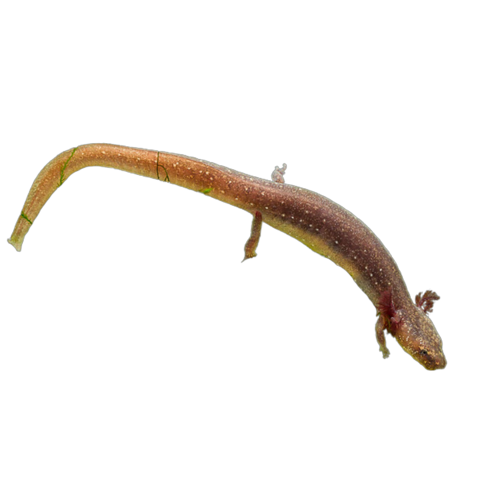
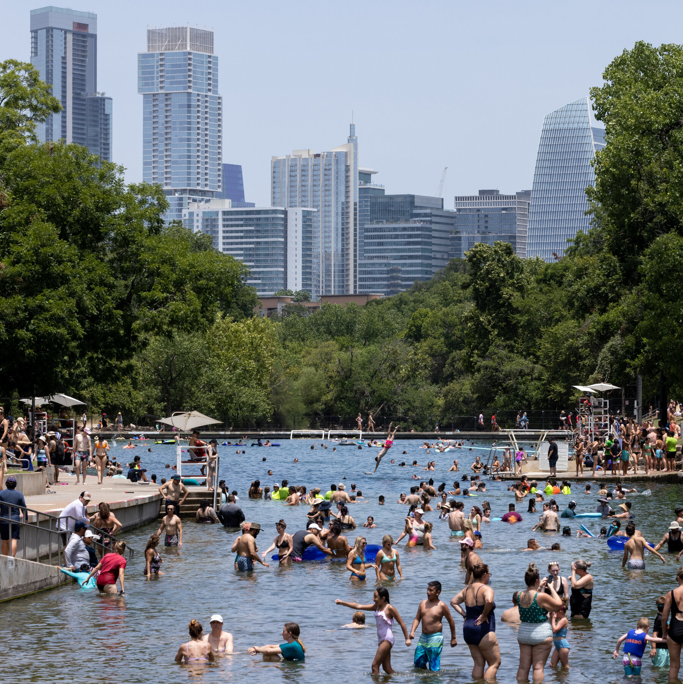
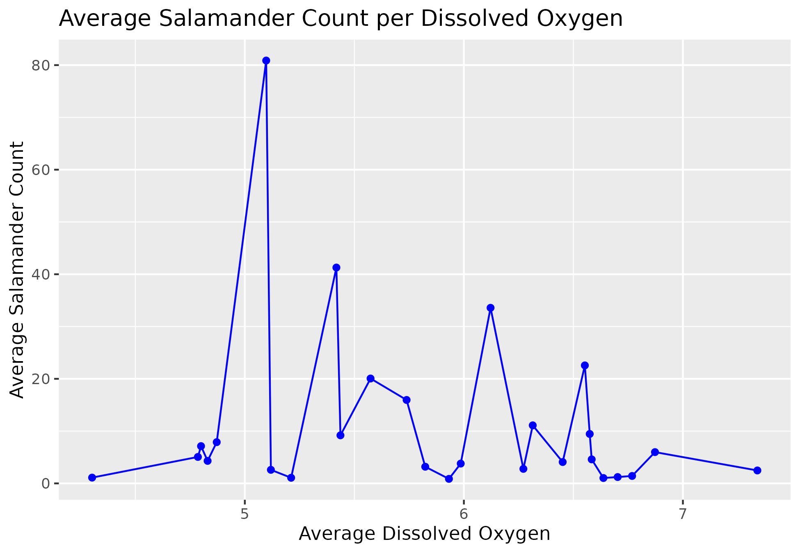
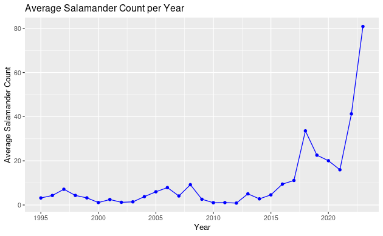
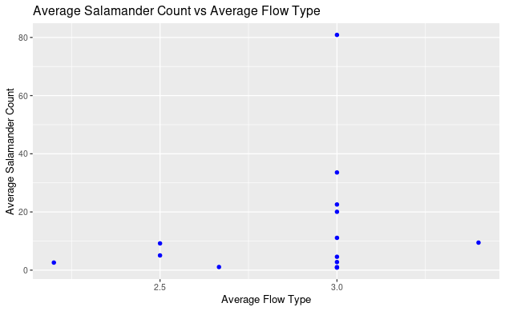
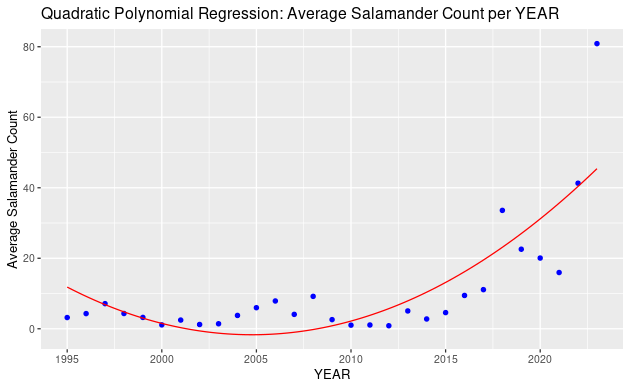

Barton Springs Salamanders
Omg! A Barton Springs Salamander is following your cursor!
Left click to make him disappear and reappear!
Overview
This website shows an surface level analysis of the Barton Springs’ salamander habitat that is further explained in our report by investigating the relationship between water quality parameters and the population sizes of Barton Springs Salamanders in Austin, Texas. This exploration hopes to quantify the ideal habitat for salamander growth unique to Barton Springs, making it conducive to the thriving of the population and the
About the Barton Springs Salamander
Barton Springs is one of four distinct water springs nurtured by the Edwards Aquifer, unique to over 50 species of plants and animals found nowhere else on the planet. Among these resides the Barton Springs salamander - an endangered species found nowhere else - marking Barton Springs as a ‘conservation site’ under the federal government. Additionally, the salamander is a keystone species - indicating their disappearance could cause drastic changes for the habitat as well as other species which rely on them for survival. (1) The significance of this singular species and the need for their conservation opens an avenue of exploration into what makes the Spring so unique for their survival and how that can be maintained to ensure the successful survival of the species - present and future. As aforementioned, our exploration focuses on the correlation between water quality parameters and the population sizes of Barton Spring salamanders. This relationship is interesting because of the overall status of the endangered salamanders, however more specifically, salamanders take in oxygen through the pores of their skin from water absorption - regardless of quality. This could pose potential problems as polluted water could be detrimental to their health, survival, and federal status. The focus on this specific problem arises from the imperative need to comprehend and address the environmental challenges endangering the delicate balance of this ecosystem.
Our Hypotheses
Hypothesis 1: Increased levels of Dissolved Oxygen (DO) in a Barton spring will lead to a larger population of salamanders.
Dissolved oxygen is a measure of how much oxygen is dissolved in water and available for living organisms. It is a strong indicator of water quality. Rapidly moving water, which tends to be cleaner, typically has a higher dissolved oxygen level than stagnant water. (2)
Hypothesis 2: Higher flow rates will result in a smaller population of salamanders.
Flow rate is an indicator of water quality. Flow rate affects the amount of sediment and silt in a body of water. (3) Salamanders typically live in creeks, which have slower flow rates, so we predicted that higher flow rates would decrease salamander population.
Hypothesis 3: Relationship between type of flow and salamander count
Hypothesis 4: Relationship between type of water medium and salamander count
Data Visualizations




Data Models

This is the best regression analysis of our data set. All the other variables for our first and initial dataset had little to significance to each other.
Ethical Considerations
Project Focus:
- Preservation and conservation of a unique population of salamanders in Austin.
- Research project with distinct ethical implications related to continuity, openness, and sustainability.
Ethical Considerations:
- Importance of exploring ethical consequences in nature, considering the impact on surrounding communities and the ecosystem.
- Barton Spring salamanders identified as an 'at-risk' species, with data collected solely for preservation and conservation purposes.
- Native 'Austinites' exhibit a sense of kinship, contributing to the salamander population's health and future conservation efforts.
Funding for Conservation:
- Average allocation of $40,000 for conservation, with proposal funds ranging from $10,000 to $80,000.
- State-owned land of Barton Springs increases surrounding land values, leading to potential conflicts for long-term residents.
Public Opinion and Dialogue:
- Loyalty of Austin residents to salamanders sparks ethical discussions on maintaining open dialogue with the public.
- Publicly accessible data on salamanders and conservation efforts, but accessibility challenges for laypeople.
- Ethical implications of untidy data and methodology changes over time, emphasizing the need for clarity in communicating impact.
Dataset Concerns:
- Untidy dataset poses ethical concerns regarding the accuracy of observed data.
- Changes in data collection methods may impact the determination of salamanders' at-risk status and funding needs.
- Importance of having accurate data for proper allocation of funds and effective salamander protection.
Sustainability and Conservation:
- Project's ethical concerns center around ensuring accurate data analysis for the well-being of salamanders in their natural environment.
- Emphasis on public involvement in contributing to and ensuring the longevity of conservation efforts.
Donate!
Your support is crucial for the preservation and conservation of Barton Springs Salamanders. Please consider making a donation to contribute to the efforts.